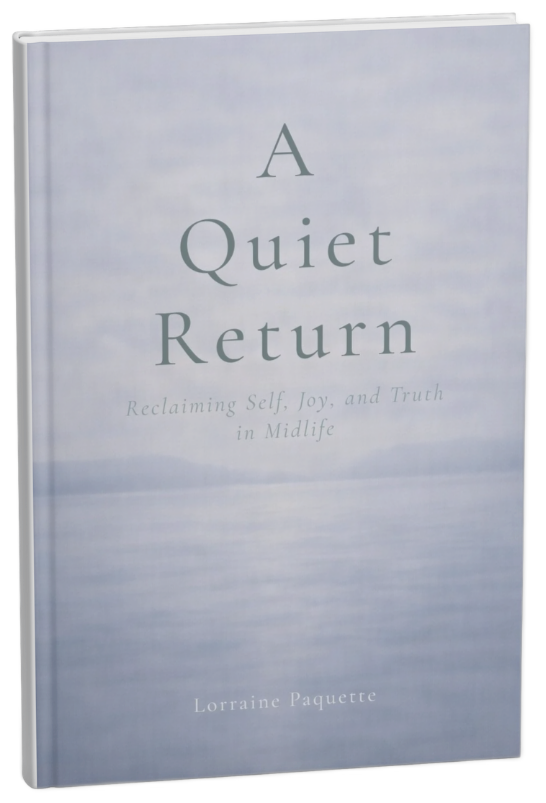

This book is not here to fix you.
It will not tell you how to reinvent your life, optimize your energy, or become a better version of yourself.
You are not broken. You are tired.
And wise.
A Quiet Return is an invitation — not to do more, but to listen more deeply. To pause long enough to notice what has been asking for your attention beneath the noise of responsibility, expectation, and care.
Midlife often arrives without clear language. There is no single moment, no universal story. Instead, there is a sense that something has shifted. That what once worked no longer does. That the life you built with devotion and strength is asking for revision — not because it was wrong, but because you have changed.
This book is for women who have been everything for everyone and are quietly wondering who they are now.
It is for the woman who is exhausted but functioning. Capable but disconnected. Successful but longing for something unnamed.
If this resonates,
you can begin here.
You will not find prescriptions here. You will find companionship.
These chapters move gently — from awareness to stillness, from release to belonging. They are meant to be read slowly, returned to, lived with. Each offers reflection and blessing, not as instruction, but as permission.
You do not need to read this book in order. You do not need to agree with everything. You only need to notice what resonates.
Midlife is not a crisis to solve. It is a threshold to cross.
This
is not the story of becoming someone new. It is the story of becoming true.
If you are here, something in you already knows the way.
Let this
book walk beside you as you return.